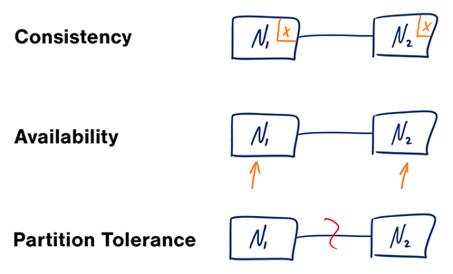

03 The System Design Primer — Study Path
Distributed systems keep more than one copy of your data. These are the rules for how those copies agree with each other, and what happens when part of the system can't be reached.

In a distributed computer system, you can only support two of the following three guarantees at once:
Waiting for a response from the partitioned node might result in a timeout error. CP is a good choice if your business needs require atomic reads and writes.
Responses return the most readily available version of the data on any node, which might not be the latest. Writes might take time to propagate once the partition resolves.
AP is a good choice if the business can tolerate eventual consistency, or the system needs to keep working despite external errors.
With multiple copies of the same data, you have to decide how to keep them synchronized so clients see a consistent view. Recall the CAP definition above: every read receives the most recent write, or an error.
After a write, reads may or may not see it. A best-effort approach is taken.
After a write, reads will eventually see it — typically within milliseconds. Data is replicated asynchronously.
After a write, reads will see it immediately. Data is replicated synchronously.
There are two complementary patterns used to support high availability: fail-over and replication.
Heartbeats are sent between the active server and the passive server on standby. If the heartbeat is interrupted, the passive server takes over the active's IP address and resumes service.
How long that takeover takes depends on whether the passive server was already running in "hot" standby, or needs to start up from "cold" standby. Only the active server handles traffic while things are healthy. Active-passive fail-over is also called master-slave fail-over.
Both servers manage traffic, splitting the load between them. If the servers are public-facing, DNS needs to know about both servers' public IPs; if they're internal-facing, the application logic needs to know about both. Active-active fail-over is also called master-master fail-over.
Master-slave and master-master replication are the mechanics behind fail-over — covered in full once you reach Module 07 · Databases.
Availability is usually quantified as uptime (or downtime) as a percentage of time the service is available — measured in "9s." A service with 99.99% availability is described as having four 9s.
| Duration | Acceptable downtime |
|---|---|
| Per year | 8h 45min 57s |
| Per month | 43m 49.7s |
| Per week | 10m 4.8s |
| Per day | 1m 26.4s |
99.9% availability — three 9s
| Duration | Acceptable downtime |
|---|---|
| Per year | 52min 35.7s |
| Per month | 4m 23s |
| Per week | 1m 5s |
| Per day | 8.6s |
99.99% availability — four 9s
If a service has multiple components that can fail, the overall availability depends on whether those components sit in sequence or in parallel.
In sequence — overall availability decreases:
If Foo and Bar each have 99.9% availability, their combined availability in sequence is 99.8%.
In parallel — overall availability increases:
If Foo and Bar each have 99.9% availability, their combined availability in parallel is 99.9999%.